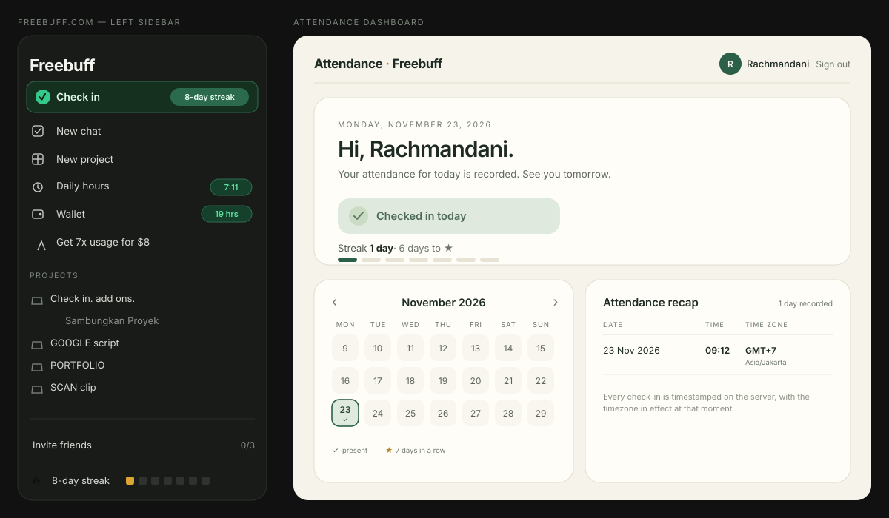

Static mock of the proposed integration. On the left, a compact Check in row sits between the Freebuff wordmark and New chat, showing the current streak without opening anything. On the right, the attendance dashboard the row leads to: today's check-in, the strict streak, the month calendar and the recap table.
